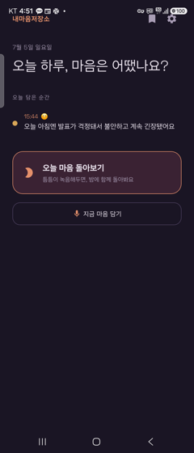
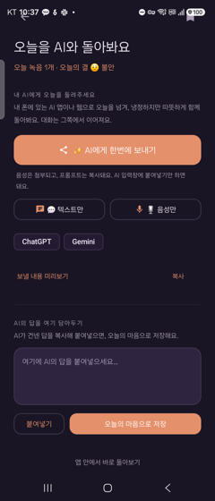

틈틈이 녹음해두면, 달빛 친구 마루와 AI가 하루를 함께 돌아봐 줍니다.
냉정하지만 따뜻하게 — 오늘 무슨 일이 있었고, 그때 마음은 어땠는지.
녹음은 내 폰에만 · 대화는 내가 쓰는 AI로 · 개발사 서버를 거치지 않아요
그래서 마루가, 말로 남긴 하루를 함께 읽어 줍니다.

하루 중 마음이 오래 머문 순간을 짧게 담아 두세요. 담긴 순간은 감정의 색으로 타임라인에 모여, 오늘이 한눈에 보여요.

밤이 되면 오늘의 녹음과 정리를 한 번에 내 폰의 AI 앱으로 보내요. 대화는 그쪽에서 이어지고, 답은 다시 앱으로 담을 수 있어요.
마음이 머문 순간을 버튼 하나로 짧게 녹음해요.
‘한번에 보내기’로 내 AI와 오늘을 함께 짚어요.
성찰을 ‘내 마음 저장소’에 한 장으로 담아요.
돌아본 하루는 이렇게 저장돼요. 내일의 나에게 남기는 한 줄과 함께.
주관적이지만 객관적이고,
냉정하지만 따뜻하게.
— 듣기 좋은 말로 포장하지 않되, 늘 당신 편인 마루
가장 사적인 기록이라, 프라이버시를 설계의 처음에 두었어요.
녹음 파일과 글은 기본적으로 내 기기에 저장돼요. 우리 서버로 올리지 않아요.
성찰 대화는 이미 쓰고 있는 AI 앱에서 이어져요. 우리 서버를 거치지 않아, 우리도 볼 수 없어요.
마음을 들여다보는 시간엔 방해가 없어야 하니까. 조용한 밤의 톤으로.
판단하거나 훈계하지 않아요. 그저 오늘을 함께 짚고, 내일 한 걸음을 곁에서 제안할 뿐.
곧 만나요. 출시되면 마루가 가장 먼저 알려드릴게요.
기본 기능은 무료로 시작해요. 프로는 구독(월/연)으로 열립니다.
내마음저장소가 출시되면 가장 먼저 알려드릴게요.
입력하신 정보는 출시 알림 안내 목적으로만 사용되며, 원치 않으시면 언제든 수신 거부할 수 있어요.